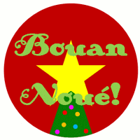

Moussieu l'Editeu,
La Merrienne et mé, j'vos souhaitons un Bouon Noué et une Bouonne Année, mais surtout j'vos souhaitons bouonne santé dans l'couothant de cinquante-huit, car comme dit la bouonnefemme, et oulle a raison, si nous a pas la santé nous a rain.
Heutheûsement, les r'frédeuse à la Merrienne ont dispathu, et mé, j'me trouve de charme. Même quand j'ai à mé l'vé à siez heuthes du matin, je saute hors du liet sans autchune diffitchulté, et le lait est tréjous prêt pour la dairy en temps. Mais, Moussieu, j'voudrais savé pourtchi que n'y'a pas pûs d'lait dans les cannes. Je crais, vriement que mes quédolles de vaques souffrent de la maladie d'ma vieille tante Souky, tch'avait l'habitude, trais ou quatre fais par an, de s'méttre au liet et de n'faithe pas un coup d'travâs pour un mais ou d'même sans autchune raison que n'ou pouvait dêcouvri.
Hier au sé, j'tiomes à pâslé, la bouonnefemme et mé, de chein tchi s'était pâssé dans l'année, et du nombre de nos viers amins tch'avaient dispathu. Mais bétôt j'décidîmes d'oublié chonna, car après tout la saison d'Nouë d'vait être une saison de jouaie.
"Y faut souhaité un Bouon Nouë à touos nos amins," s'fit la Merriennne, "et à touos les membres de notre famillye," ou s'fit.
"Vèthe," j'l'y dit, "et y n'faut pas oublié les membres d's'Etats tch'y sont vont faithe nos louaix."
"Ah, quant à chonna, je n'sais pas," ou dit "car y n'ont pas agi comme des mêssieux au sujét d'notre Député. Ch'est une vraie honte de l'vais mint d'côté comme membre d'un important comité, en faveur d'un nouviau membre, et il est grand temps que la pâraisse de Saint-Ou de r'butte."
"Je s'y bein de t'n'avis, ma vieille," j'l'y dit, "mais comment s'prendre pour changi chein qu'a tait fait? Sans autchune doute ch'est honteux, mais le Mâjeur ne manque pas d'couothage, et y supportetha chonna comme le vrai moussieu tch'il est. Y faut l'y souhaité tout ch'qui y'a d'miyeu duthant l'année tchi veint, et la même chose qu Jim Le Bro, le préchain Connêtablye. La gâzette veur dithe tch'il entreprend une djobbe tchi présente bein des diffitchultés, mais le Jim n'a jamais yeu d'peux d'faithe fache à ditet, et à trais ans d'ichin, pourvu tch'il aie sa santé dans l'entretemps, la pâraisse pouôrra dithe tch'il a fait un raide bouon Chef."
"J'n'en doute pas," ou s'accordit, "mais ach'teu, Ph'lip, y m'semblye tchi faut étout envié nos miyeurs souhaits à Cyril Le Merquand, tch'est ach'teu Président du Comité des Finances."
"Eh bein vèthe, sûs un sens," j'l'y dit, "mais il a la djobbe tch'il avait voulu pour un nombre d'année, et n'ou n'doute pas tch'il a la capacité."
"P't'être bein," ou dit, "mais n'oublie pas qe sûs l'nouviau comité, y y'a étout le Sénateur Rumfitt et le Député McCarthy, tchy sont étout éxperts en matièthe de finance. Crais-tu qu'chais trais-là accordéthont? Y'a un proverbe angliais entouôre la soupe tchi peut être gâtée si trop d'gens s'en mêlent."
"Ch'est lûs affaithe," j'l'y dit. "S'ils accordent, tant mûs, s'y n'accordent pas, tant pièthe. Tch'y s'ramâssent. Mais ach'teu, Merrienne, y'a une chose que j'avons oublié, et ch'est d'souhaité un Bouon Nouë et une Bouonne Année a nos amins des Chroniques. Tchèsque tu'en dis d'un p'tit vêrre à la santé du chef et d'ses bouons travailleurs?"
Et, ma fé, Moussieu, la bouonnefemme s'en fut à l'armouaithe et dêshallit la bouteille!
Ph'lip
Les Chroniques de Jersey 21/12/1957
Viyiz étout: